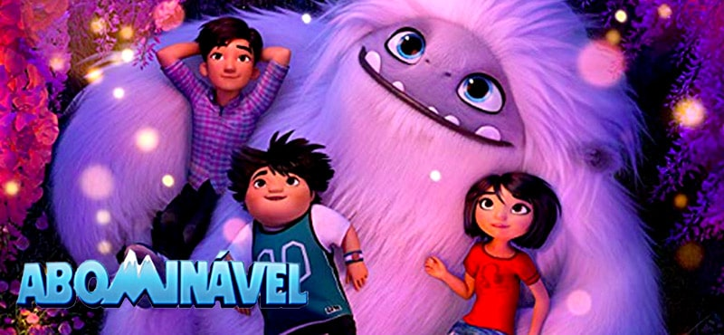

Abominável
A partir do 6 anos
Shanghai, China. Yi é uma adolescente que, certo dia, descobre que um yeti está no telhado do prédio em que ela mora. A partir disso, ela e seus colegas passam a chamar a criatura mística de "Everest" e, ao criarem laços com o animal, decidem levá-lo até sua família, que está no topo do planeta. Porém, os três amigos terão que conseguir despistar o ganancioso Burnish e a zoóloga Dra. Zara, que querem pegar o yeti a qualquer custo.
A pirâmide de Gizé foi roubada, sendo substituída por uma imensa réplica a gás. O feito é
considerado o roubo do século, o que mexe com o orgulho de Gru. Desejando realizar algo ainda mais
impressionante, ele planeja o roubo da Lua. Para tanto conta com a ajuda dos mínions, seres
amarelados que trabalham como seus ajudantes, e do dr. Nefario, um cientista. Só que para realizar
o roubo terá que tomar de Vetor, o ladrão da pirâmide, um raio que consegue diminuir o tamanho de
tudo que atinge. Sem conseguir invadir a fortaleza de Vetor, Gru encontra o plano perfeito quando vê as
três órfãs Margo, Agnes e Edith entrarem no local para vender biscoitos. Ele então vai ao orfanato
e resolve adotá-las. Só não esperava que, aos poucos, fosse se afeiçoar às irmãs.

O Hotel Transilvânia é um resort cinco estrelas que serve de refúgio para que os monstros possam
descansar do árduo trabalho de perseguir e assustar os humanos. O local é comandado pelo Conde
Drácula, que resolve convidar os amigos para comemorar, ao longo de um fim de semana, o 118º
aniversário de sua filha Mavis. O que ele não esperava era que Jonathan, um humano sem noção,
fosse aparecer no local justo quando o hotel está repleto de convidados e, ainda por cima, se
apaixonasse por Mavis.

Em Tá Chovendo Hambúrguer, Flint Lockwood é um jovem cientista que sonha criar algo que faça com que
seja reconhecido pela população de Boca Grande, uma pequena ilha no Atlântico. Um dia ele consegue
descobrir uma forma de transformar água em comida, só que precisa de bastante eletricidade para
colocá-la em funcionamento. Ao tentar usar a energia da geradora local, ele perde o controle da
invenção e ela ruma para o céu. Para piorar, a confusão que ele cria destroi um parque de
diversões, o grande trunfo do prefeito Shelbourne para melhorar a economia local. Flint acredita ter
perdido a máquina, mas repentinamente começa a chover hambúrgueres em toda a cidade. Com o apoio de Sam
Sparks, uma estagiária de jornalismo que foi enviada à ilha para ser a nova "garota do tempo", Flint
logo vira uma celebridade local.